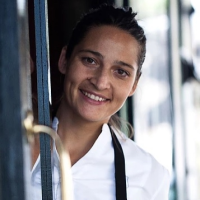

Nos chefs ont du talent
Respect du client : cuisiner et servir des produits frais de qualité, passion du métier de la cuisine à la salle, accueil, citoyenneté, respect de l’environnement, sont les valeurs fondamentales de nos chefs.

Nos devs ont du talent
Notre équipe est composée d’un developpeur Full-Stack, d’une UX Designeuse et d’un développeur Back. Fraichement diplômés de l’école du Wagon en décembre 2018 et actuellement en stage, nous sommes à la recherche de nouveaux défis à relever.
Farah
UX designeuse, qui aime se prendre le chou surtout lorsqu’il s’agit d’intégration.
Pierre
Full-stack developper et gourmet adepte du fait-maison.